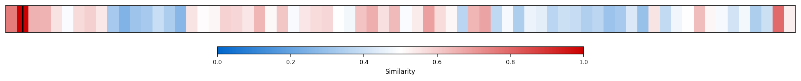
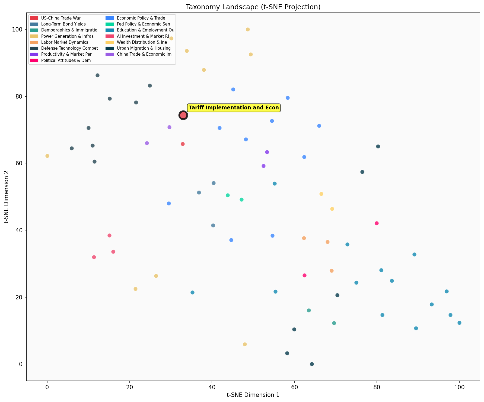

Description
This subcluster examines the concrete implementation of tariffs and their measurable economic consequences within US-China trade relations. Articles focus on quantitative analysis of tariff pass-through rates, revenue projections, GDP impacts, and distributional effects across income groups. Common sources include Congressional Budget Office forecasts, product-level pricing data, retailer testimonials, and economic modeling studies. Content emphasizes empirical measurement of policy outcomes, from household cost burdens to federal revenue generation. Unlike its sibling cluster on currency and trade balance dynamics, this subcluster prioritizes direct tariff mechanics and immediate economic transmission effects rather than broader monetary or macroeconomic equilibrium considerations.
Similarity to All 70 Subclusters
Each cell represents a subcluster. Color intensity shows similarity (blue=low, red=high). Black line marks current subcluster position.
Relationship to Primary Clusters
Average similarity to each of the 15 primary clusters. Larger area = stronger relationship to that cluster.
Taxonomy Landscape
All 70 subclusters positioned by similarity (t-SNE). Current subcluster highlighted with label. Click to enlarge.
Network Connections
Current subcluster at center, connected to related subclusters. Line thickness = similarity strength.
Most Representative Articles
-
1. .@ernietedeschi estimates that 20% tariffs on China and 25% on Canada/Mexico will decrease real GDP
-
2. New US tariffs will reduce imports by 30% and China’s exports to the U.S. will decline by 85% as of
-
3. Bloomberg projects average U.S. tariffs will triple from 2.6% in 2023 to 7.8% by 2026, driven by hea
-
4. Imports of goods and services are ~14% of US GDP. “Maximalist” tariffs would cut GDP by ~4% and lift
-
5. Noting elevated forward earnings, @FedGuy12 argues markets have not priced a hit to corporate profit
Edge Cases (Boundary Articles)
-
1. As prices rise, lower-income households are disproportionately impacted as they generally buy producThis article is borderline for the "Tariff Implementation and Economic Impact" cluster because while it discusses economic impacts, it focuses on general inflationary effects on different income groups rather than specifically examining tariff implementation or US-China trade consequences. The content aligns more closely with income inequality and inflation dynamics, which explains its higher similarity to the "Income Growth vs. Inflation Reality" cluster.
-
2. A @NewYorkFed survey of about 700 businesses finds an average 60% rate of cost-price passthrough oveThis article is borderline because while it discusses cost-price passthrough (a key mechanism in tariff implementation), it doesn't specifically mention tariffs or US-China trade relations, instead focusing broadly on how businesses pass costs to consumers. The content is more about general pricing behavior and inflation dynamics, which explains why it shows higher similarity to the "Income Growth vs. Inflation Reality" cluster.
-
3. Greg Ip argues the potential firing of Lisa Cook is a credible threat to Fed independence, noting “NThis article about potential Federal Reserve board member firing has no connection to tariff implementation or US-China trade relations, instead focusing entirely on Fed independence and monetary policy governance. The article appears to be completely misclassified, as it deals with central banking personnel issues rather than any aspect of trade policy or economic impacts of tariffs.
Original Dendrogram